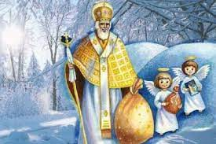

Цікаві факти
-
Символом Різдва ялинка вперше стала в середньовічній Німеччині, де її прикрашали яблуками та іншими плодами, оскільки згідно з християнськими переказами в ніч народження Ісуса всі дерева зацвіли і заплодоносили. У ті часи ніхто не думав, яка ж ялинка краще для оселі на свято, а просто вирушали в ліс за живим деревом.
-

Святий Миколай відрізняється також і тим, що на відміну від новорічних “дідусів”, він є справжнім святим, який своїм життям та благородними вчинками, заслужив такий почесний титул.